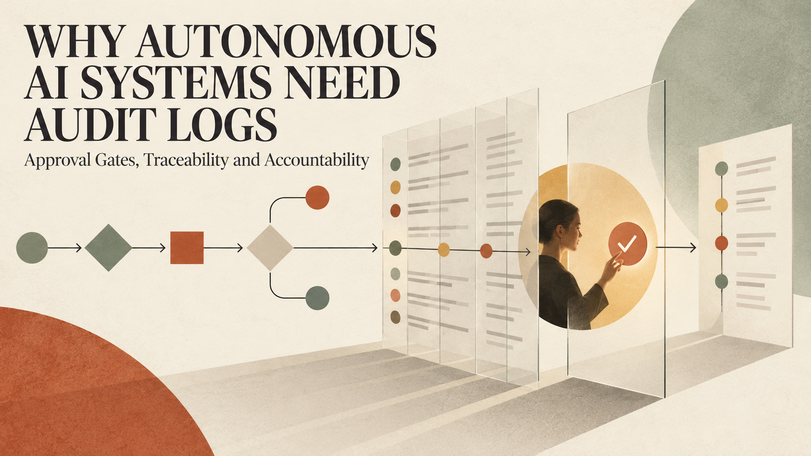

What happens when an AI system does not merely recommend an action, but takes it?
That question changes the engineering problem completely. A chatbot that drafts an email creates one kind of risk. An agent that can open a pull request, query customer data, change cloud infrastructure or trigger a payment creates another. The second system is not only producing content. It is participating in an operational process with consequences.
This is why autonomous AI governance cannot be reduced to a final “approve” button. A responsible system needs a reliable record of what happened, carefully placed approval gates, limited permissions and a named person or team that owns the outcome.
Traditional software follows paths engineers define in advance. An autonomous agent can receive a broad objective, select tools, break the work into steps and adjust its plan as new information appears. That flexibility is useful, but it also creates more possible routes to an unsafe result.
The risk does not require a malicious model. It can begin with an ambiguous instruction, outdated context, an over-permissive integration or a tool response the agent interprets incorrectly. If the agent has authority to act, a small reasoning error can become a production change.
OWASP’s work on agentic AI highlights risks such as excessive agency, tool misuse, memory poisoning, identity and privilege abuse, and cascading failures between agents. The practical lesson is simple: teams must secure the complete action chain, not only the model prompt.
A useful audit record should allow an engineer, security reviewer or regulator to reconstruct an agent’s behaviour. At minimum, it should record:
Sensitive values must be redacted, but redaction cannot become an excuse for an empty log. A record that says “task completed” is operationally weak. A record that exposes secrets is dangerous. Good observability sits between those extremes.
Logs also need integrity. If the same agent can modify both a business record and the evidence describing that modification, the evidence is not trustworthy. High-impact events should be written to controlled, access-restricted storage with appropriate retention and tamper detection.
Requiring approval for every step makes an agent slow and teaches people to click through prompts without thinking. Requiring no approval assumes every action is equally reversible. Both designs are poor.
A better approach classifies actions by impact.
Low-risk, reversible actions can often run automatically. Examples include reading public documentation, creating a local draft or running tests in an isolated environment.
Medium-risk actions may proceed within strict limits. An agent might update a non-production content record, but only within a defined schema, rate limit and rollback window.
High-risk actions should require explicit approval. Deploying to production, changing access controls, sending money, deleting data, contacting customers or exposing private information should not be hidden inside a long autonomous chain.
The approval screen must show the proposed action in plain language, the affected resource, the expected impact and the evidence used to reach the decision. “Allow tool call?” is not enough context for informed consent.
An agent should receive the narrowest authority required for the current task, for the shortest practical time. This means separating identities by environment and purpose, scoping API tokens, restricting network destinations, limiting write operations and expiring temporary credentials.
It also means designing tools carefully. A purpose-built function such as create_support_draft is safer than handing an agent unrestricted database access. Constrained tools reduce the number of invalid states the system can create.
For multi-agent systems, permissions should not automatically flow from one agent to another. A research agent, coding agent and deployment agent have different responsibilities. Their identities, tools and audit events should make those boundaries visible.
An AI system cannot be the accountable party. Responsibility remains with the people and organization that select the system, define its permissions, approve its use and operate the surrounding controls.
Every production agent therefore needs an owner. That owner does not need to watch every successful step, but must be responsible for access reviews, policy changes, incident response, performance monitoring and retirement of the system.
The NIST AI Risk Management Framework organizes AI risk work around four functions: Govern, Map, Measure and Manage. That structure is useful because it prevents governance from becoming a one-time launch checklist. The operating environment changes, models change, tools change and new failure modes appear.
A dependable autonomous workflow can follow this sequence:
This pattern will not eliminate failure. It makes failure easier to contain, investigate and correct.
The impressive part of an autonomous system is what it can do. The trustworthy part is what it is prevented from doing silently.
Teams should be able to answer four questions after any consequential run: What did the agent know? What was it allowed to do? What did it actually do? Who accepted responsibility for the result?
If those answers are missing, the system is not ready for meaningful autonomy. It is simply powerful software operating without enough evidence.
I design and build dependable web, fintech, API and automation systems with security, observability and operational recovery considered from the beginning. To discuss a project, email hello@massoda.me or contact me on WhatsApp.